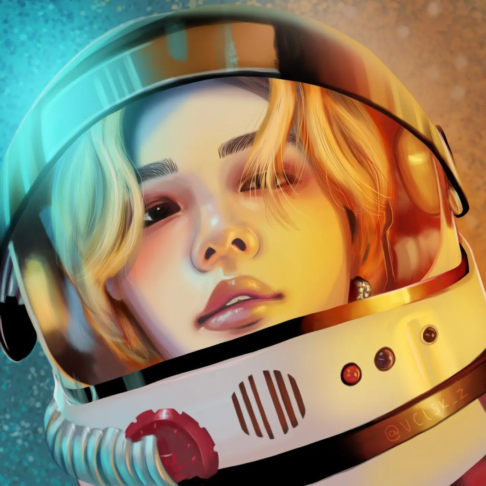

PORTFOLIO



Hola, soy Violeta, también conocida cómo unpainted. A lo largo de mi vida, siempre he encontrado inspiración en lo creativo, ilustrando y observando el mundo con una mirada artística. Esta pasión me ha permitido explorar diversos campos del arte y el diseño, donde no solo busco lo estético, sino también lo funcional y estratégico. El conocimiento que sigo adquiriendo es la base de cada una de mis creaciones, y cada día me esfuerzo por aprender más y mejorar. Estoy aquí para ayudarte en lo que necesites, aportando siempre lo mejor de mí.
Actualmente curso la licenciatura en Diseño de la Comunicación Gráfica en la Universidad Autónoma Metropolitana. Mi formación me ha permitido desarrollar habilidades en el ámbito visual y estratégico, combinando creatividad con funcionalidad para transmitir mensajes efectivos. Este enfoque integral me ha brindado una sólida base para abordar proyectos de diseño con una visión innovadora y estructurada.
Obtuve el título de Técnico en Programación en el Centro de Bachillerato Tecnológico Industrial y de Servicios, donde adquirí conocimientos básicos en desarrollo de software, lógica de programación y manejo de diversas tecnologías. Esta formación técnica me ha permitido desarrollar un enfoque estructurado y eficiente en la resolución de problemas, complementando mi capacidad creativa en proyectos de diseño y tecnología.
A lo largo de mi vida, he desarrollado habilidades tanto en el dibujo tradicional como en el digital. Desde temprana edad, el dibujo ha sido una forma esencial de expresión creativa para mí, perfeccionando técnicas como el grafito y los lápices de colores. Con el tiempo, también me sumergí en el mundo digital, utilizando como herramienta principal la tableta gráfica y software de diseño para explorar nuevas formas de creación. Esta combinación de técnicas tradicionales y digitales me ha permitido adaptarme a diferentes estilos y medios, siempre buscando mejorar y experimentar con nuevas formas de expresión visual.
Tengo un buen manejo de programas de diseño, especialmente Adobe Photoshop e Illustrator, que uso para crear gráficos e ilustraciones atractivas. También trabajo con Lightroom, InDesign para diseñar maquetas editoriales y Premiere para editar videos. Mi versatilidad en estas herramientas me permite abordar diferentes proyectos y colaborar de manera efectiva, aportando contenido visual que resuena con los objetivos del equipo.